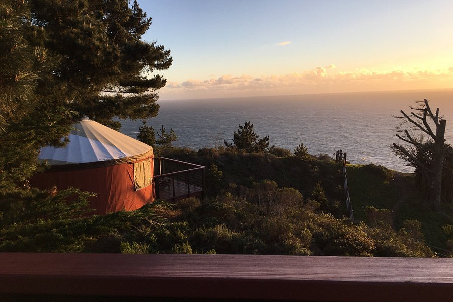

Enjoy Nature in Luxury
Pacific Trails Resort on the California North Coast offers panoramic views of the Pacific Ocean. Our guests experience an opulent camping adventure in sumptuously
appointed private yurts featuring a gas fireplace, king-size bed, and private deck.

What is a Yurt?
Our luxury yurts are permanent structures four feet of the ground.
Each yurt has canvas walls, a wooden floor, a roof dome that can be opened, and a private deck.

How are the Yurts Furnished?
Each yurt is furnished with a gas fireplace, king-sized bed with a down quilt, comfy couch, dining table and chairs,
mini-fridge, microwave and coffee maker. Your luxury camping experience includes a sink with hot and cold running water.
Shower and restroom facilities are located in the lodge.

What should I bring?
Most guests pack comfortable walking shoes and plan to dress for changing weather with layers of clothing. It’s also
helpful to bring a flashlight and a sense of adventure!